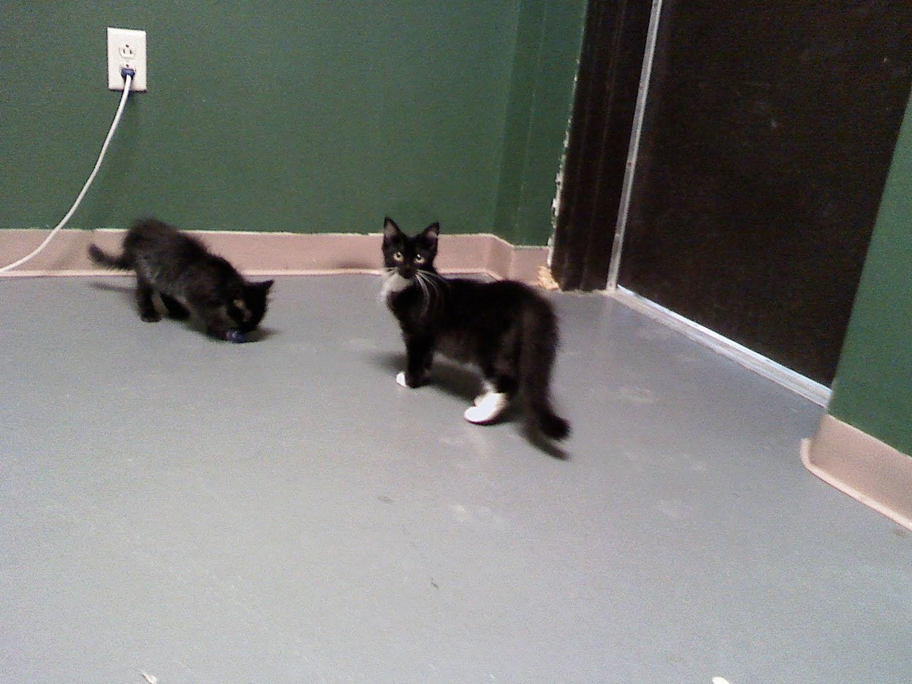

▹ About ◃
London was a very special cat adopted in August of 2009 by her mom Carolynn. She was very playful, and even more sassy. She didn't really like people, but she loved her family. She is missed dearly but remembered eternally.

▹ Things London Loved ◃
▹ Things London Hated ◃
▹ Things London Was Neutral About ◃
(but probably hated)
- Late bedtimes
- Dogs ✶
- Being brushed
- Being held (for less than 2 minutes)
- Popcorn?
▹ London's Favorite Hangout Spots ◃
▹ London's Favorite People ◃
- Carolynn, her mom
- Estevan, her dad
- Allen, her grandpa
- Honorable Mentions: grandma Janine, auntie Emma, Jackson for giving her chicken under the table that one time
▹ London's Favorite Foods ◃
- Chicken
- Tuna
- Whipped cream
- Ice cream
- Frosting (she was never allowed cake, but that would probably make the list)
- Milk from the bottom of the cereal bowl
- Jerky treats
- Fortune cookies
- Honorable Mentions: French fries, tortilla chips, salmon
▹ Things That Made London Especially Wonderful ◃
- She could do 2 tricks (sit and paw)
- She made a very cute face whenever she was trying to mooch food ✶
- She loved napping in empty suitcases
- She shed like crazy, but somehow never got fur on my clothes
- She loved to sleep with her head on a pillow next to her mom
- She didn't like being mocked in any form
- She helped me survive the worst years of my life and brightened even the best of the last 13 years
- She loved nothing so much as she loved me
Rest In Peace London (Bridges) Williston
The best cat who ever lived

▹ Photo Gallery ◃